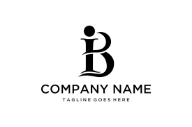

About Me
Hello! I'm Blandine Iradukunda, a dynamic engineer from Kigali, Rwanda, with a focus on cloud infrastructure solutions. Currently pursuing a BSc in Software Engineering at the African Leadership University, I have developed a strong foundation in networking and application development.
With hands-on experience as a Tech Support Intern and Product Support Analyst, I excel in troubleshooting complex technical issues and delivering exceptional client support. I thrive in collaborative environments and am committed to continuous learning, ensuring that I stay updated with the latest technological trends to provide innovative solutions.
Passionate about technology's potential for change, I actively engage in initiatives promoting equality, governance, and women's empowerment. In my free time, I enjoy playing volleyball, dancing, and volunteering.
Feel free to connect with me via reach out through my contact information below!
Skills
- HTML: Proficient in creating semantic, accessible web pages using HTML5.
- CSS: Experienced in styling and layout techniques, including Flexbox and Grid, to create responsive designs.
- JavaScript: Strong understanding of core JavaScript concepts, enabling dynamic and interactive web applications.
- React: Skilled in building user interfaces with React, leveraging component-based architecture and state management.
Experience
Tech Support Intern
Girls Guide Association – Kigali, Rwanda (September 2023 - July 2024)
- Tackle both basic and complex technical problems effectively.
- Ensure that unresolved tickets are properly handed off at the end of each shift to maintain continuity in support.
- Serve as the initial point of contact for users needing assistance, documenting their issues in a ticketing system.
Product Support Analyst Assistant
Canal Box – Kigali, Rwanda (January 2023 - August 2023)
- Provide first and second-level support for software applications and services.
- Troubleshoot and resolve issues reported by clients through various channels such as phone, email, or chat.
- Document all support requests and resolutions in the ticketing system to maintain accurate records.
Engineering Support Intern
TOYOTA RWANDA – Kigali, Rwanda (June 2022 - December 2022)
- Help troubleshoot technical issues within engineering systems or processes.
- Engage in research activities that contribute to product development or process improvements.
- Assist in ongoing engineering projects, providing support in data collection, analysis, and documentation.
Education
African Leadership University – Kigali, Rwanda
BSc. Software Engineering (January 2024 - Present)
Relevant coursework: Networking, Application Development.
ALX Rwanda – Kigali, Rwanda
Virtual Assistance Course (July - September 2024)

Lycee De Kigali - Kigali, Rwanda
High School Diploma (January 2019 - August 2022)
FAWE Girls’ School - Kigali, Rwanda
Ordinary Level Certificate (January 2016 - December 2018)
Projects
Founder, Accord the Famished
Aimed at achieving the Zero Hunger goal across Africa by tracking food distribution channels and managing post-harvest food waste. Developed strategies to enhance food security and sustainability through data-driven insights.
Contact Me
Rwandan | KG 653 Street, 41, Kigali, Rwanda | +250 789 134 216
LinkedIn: linkedin.com/in/iradukundablandine
Instagram: instagram.com/b__landine